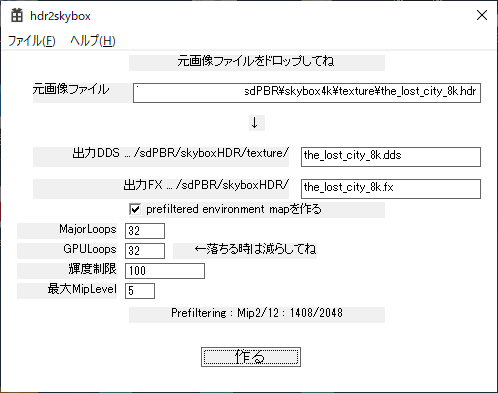
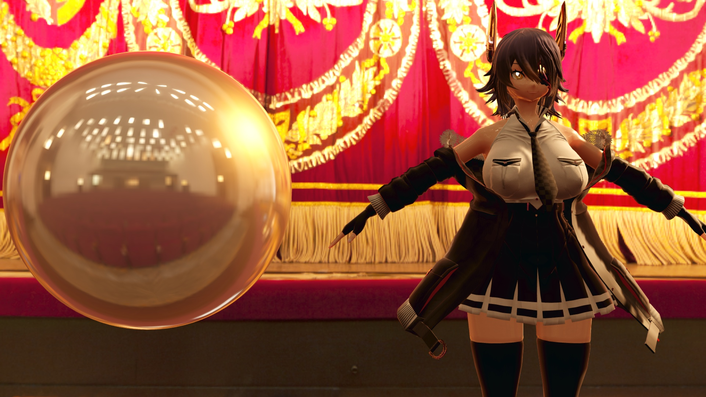
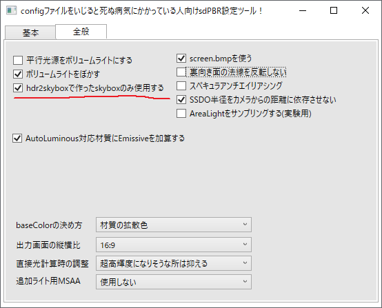
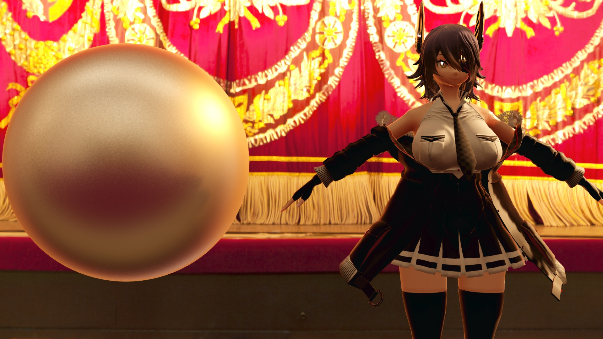
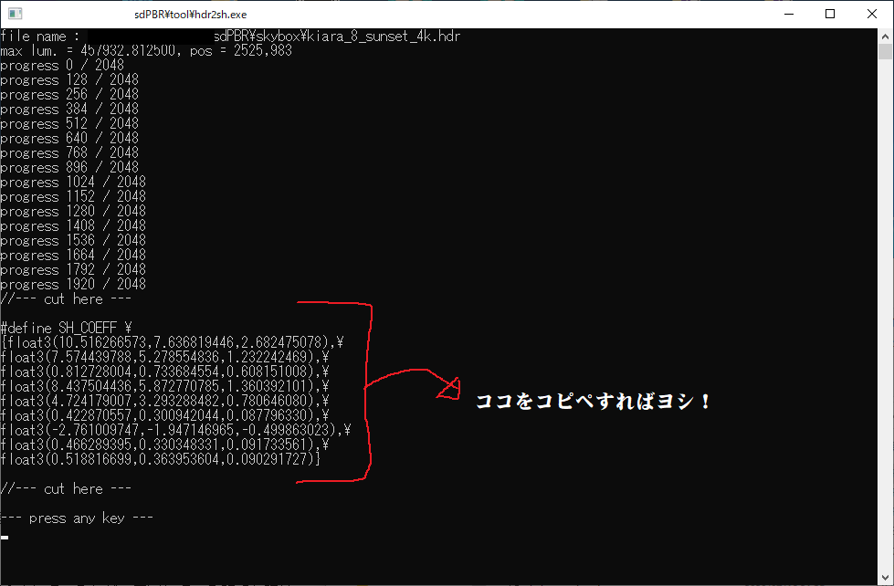

同梱のskyboxだけでは誰のMMD作品にでも合う物はさすがに提供しきれません。基本的には自分の作品に必要なskyboxは自分で作らねばならないという事になると思います。
skyboxの機能というのは背景そのものを描画するのではなく環境マップを格納する事ですが、環境マップが出来合いのモノだとどういう不都合が起こるかというと
前者の映り込みを正確にするというのはリアルタイムでやろうとするとDirectX9ではマシンパワーが幾らあっても足りません。DirectX12になっても普通に買えるレベルのPCではなかなか荷が重いですから、動き回るモデルは「とりあえず無いものとして」背景だけでもきちっと映り込ませたい、という程度で我慢して頂きたいと思います。観ている方だって2020年代になったばかりの現状ではまだそこまでは要求しないでしょう。
背景だけでいいからある程度正確に映り込ませたいとなると、使いたい背景をセットアップして、基準になる点から360°撮影を行って、Equirectangular(後述)に変換したパノラマ画像を作ればOKです。サラっと書きましたが面倒ですから、気づいてもらえるかは別としてやればそれだけでも作品の特徴になり得ます。なので、今ならわりとやったもん勝ちですよ？VR対応MMDを作ったことのある方なら割合すんなり作れるかなと思います。
というわけで、そういう面倒な事を比較的簡便に行うためのツールをVersion1.50からご用意しました！tool\equirectangularに入っていますので、使いたい背景にそぐうskyboxを自作したい！という方は是非ご利用ください。全自動というわけでもないのでちょっと面倒ですが無いよりは大分良いと思います。
ともかく、より手軽に出来る範囲でとなると、HDRI公開サイトで手に入るHDRIから自分の作品に色調だけでもなんとなく合いそうなものを探してきて適用すれば良いと思います。なんだかいい加減ですがシーン内の全ての物体が同じ環境色を共有しているというだけでもモデルたちが生き生きと地元面をするようになり、CGならではの不自然さが大分低減されます。
この通り、左の画像にあるただの灰色の球体でも右のように地元面をしやがります。最初からこの劇場に置いてあったかのようですね？
skyboxを作るためにはskyboxのもとになる画像が必要です。skyboxに設定する画像は以下の要件を満たしている必要があります
Equirectangularてなんやねんという話ですが、skyboxというのはシーンの全周を取り囲んだ球体の内側にベタっと貼りついたような恰好をしています。ですので、メルカトル図法の親戚のような正距円筒図法という方法で「球体の表面→縦横比1:2の長方形」に変換した形のテクスチャを用意する必要があります。
自分でお絵かきをして作るのはいかにも大変ですから、とりあえずそういう画像を公開しているHDRI Labs.やHDRI HAVENというサイトがありますので、まずはそちらで良さげな物を探して使ってください。ライセンスはご自身でちゃんとチェックしてくださいね！
作り方の説明入る前に、持っておくと助かるツールについて紹介させてください
sdPBRのtoolフォルダに入っています。DirectXのテクスチャを格納するためのDDSファイルを見るためのツールですが、カーソルキーの上下で表示するMIPレベルを変更できます。ウィンドウやexeファイルのアイコンにDDSファイルをドロップすると閲覧できます。後で説明するhdr2skyboxで作成したskyboxのDDSファイルのチェックにどうぞ。絵を鑑賞するツールではなく、画素にどんな値が入っているのかチェックするためのツールなので、ガンマ補正はしません。ですから、リニア色空間で描かれている(HDRの)画像などは暗く表示されると思います。
上記リンクから配布元に飛べます。Microsoftが配布しているDirectXTexというライブラリのサンプルなんですが、非常に使えます。Texconvは様々な画像フォーマットの変換ツールとして使う事ができ、Texassembleは複数の画像からボリュームテクスチャやテクスチャ配列(DirectX9では未サポートなのでMMDからは使えませんが…)を作成することが出来ます。DirectXTex自体はこちら
ところで、sdPBR付属のskybox作成用ツールは先に述べたように一辺のサイズが2の整数冪でないと扱えませんから、使いたい画像によってはサイズが引っかかってしまう事が多いでしょう。Texconvには画像のリサイズを行う機能が付いていますからとても役立つと思います。もしもTexconvのようなコマンドライン用のツールは使いづらいという場合は、gimpでもHDRフォーマットの読み書きができますから、そちらを使うとよいでしょう。
Version 2.70からtoolフォルダにhdr2skyboxというツールが付きまして、これにさっき調達してきたhdrファイルをドロップすればそれだけでskyboxが作られます。hdrファイルじゃなくても、対応している形式ならpngでもjpegでもddsでも良いです。

起動するとこういう雑な作りのウィンドウが表示されます。実装上の都合で、C#じゃなくてVC++で頑張って作ったので勘弁してください。
使い方なんですが、ウィンドウにhdrファイルをドロップすると「作る」ボタンが有効になるのでクリックするだけです。あとはしばらく待っていればskyboxHDRフォルダにskyboxが作成されますが、一応、次の章までは読んで下さい。
色々オプションがあるので、それについては後述します。
物体に何か映り込みが生じる時、鏡のように表面の滑らかな(roughnessの低い)物体にははっきりした、ぼやけていない状態で映り込み、表面の粗い(roughnessの高い)物体なら逆にぼやけて何が映っているのか良くわからない状態になると、それっぽい映り込みを表現できると想像出来ると思います。roughnessパラメータに応じたスペキュラ環境マップの張り方をするために、なんらかの工夫がいるという事です。
幸い、DirectXにはmipmapという便利な仕組みがあります。mipmapについての詳しい説明については各自でぐぐって欲しいんですが、1枚の画像のみを納めたテクスチャも、読み込まれる時に等倍の画像だけでなく、半分の解像度・1/4の解像度・1/8…と解像度を縮小したテクスチャのセットが自動的に作られ、原寸をmipレベル0、1/2倍の画像をmipレベル1…とmipレベルが高くなるにつれて小さな画像に対応させています。これらはテクスチャを縮小した状態で貼り付けた時にガビガビにならないようにするために作られている訳ですが、わざと縮小されまくっているmipレベルを選択して貼りつける事でぼやけた状態のテクスチャとして使う事も出来ます。
そんなわけでVersion2.60以前のsdPBRでは、roughnessパラメータに対してスペキュラ環境マップがぼやける効果を、ほぼ単純にmipレベルを粗くする事だけで実装していました。確かにこれでもなんとなくぼやけるので、まあせやろか、という程度の見た目にはなっていました。しかし、roughnessパラメータがある程度低いうちからそこそこのぼけ方をしてくれるためには、roughness=1.0になる頃にはかなり粗くなるレベルまでmipレベルを変えなければならず、ブロック状の映り込みになったりしてました。

(｀・ω・)様作 天龍改二をお借りしました！ありがとうございます
この画像は従来の(prefilteredではない)環境マップ適用時です
roughnessがある程度になると映り込みがブロック状になります
hdr2skyboxの説明で出てきたprefiltered environment mapというのは、前もってぼかした環境マップですという程度の意味合いでして、hdr2skyboxが時間を掛けてroughnessに応じた良い感じのぼけ方をしたスペキュラ環境マップを作ってddsファイルに書き込んでいるのです。mipレベル毎に違う画像が入っているんですね。
prefiltered environment mapを使うに当たって、ちょっと設定をする必要が有ります。sdPBRconfig.exeの全般タブでhdr2skyboxで作ったskyboxのみ使用するにチェックを入れている時だけprefiltered environment mapが使われます。
※hdr2skyboxで作ったskyboxのみ使用するをオンにしている状態では、skybox2,3,screenフォルダに入っている、実行時に内容の書き換わるskyboxの動作はおかしくなるのでご注意ください。また、以下の方法で作ったprefiltered environment mapではない画像を用いると、画像が妙にツルツルした感じになると思います。skyboxフォルダに元々入っている同梱のskyboxはprefiltered environment mapではないのでツルツルになります。

hdr2skyboxで作ったskyboxのみ使用するにチェックを入れている状態で、sdPBRconfig.fxsubを書き出して有効にし、先ほど作ったskyboxの.xファイル(と、skyboxHDR/skyboxDisplay.pmx)をMMDにドロップすると、prefiltered environment mapが有効になった綺麗な映り込みが表示されるようになります。
 |
余談ですが、変換後のddsファイルの容量はhdrファイルの時より極端に大きくなります。この理由としては、各mipレベル毎に異なる画像を入れているから、というよりも、実際にはhdrファイルでは1ピクセルを32ビット(RGB各8ビット+指数8ビット)で表していて圧縮も一応効いているのに対して、ddsファイルの場合はRGBA各16ビットで64ビット必要な事と、無圧縮である事が原因だったりします。しかし、DirectXに読み込まれた後のビデオメモリの占有量は半分で済みます。hdrファイルをそのまま読み込むと内部的にはRGBA各32ビットで1ピクセルあたり128ビット！として扱われるためです。かなり無駄が多いのですがhdrファイルに納められている情報を全く欠落させずにDirectXのテクスチャフォーマットで表現しようとすると仕方がないのだと思われます。実際のところ、このツールを使ってskyboxを作るとどう設定してもhdrファイルに納められていた輝度が65504を超えた分は無視され、65504としてddsファイルへ格納されますが、実用上大きな問題になる事は無いと思われます。デフォルトの設定では輝度100で制限されますし、輝度65504付近までカットせずに入れようとすると、モデルの肌がギラついた感じになるなど色々と使いづらいskyboxが作られがちです。
いくつかオプションらしき設定が有るので説明しておきますが、基本的にはいじらなくて大丈夫です。ツールが落ちる時だけGPULoopsを減らしたり、prefiltered environment mapを作らないようにしたりすれば良いかなと。
| 出力DDS | DirectX DDSファイル形式でskybox用のテクスチャが保存されます。ファイルサイズがやたらデカくなるんですが、後で述べるprefiltered environment mapを格納しているため仕方ないんです。 |
| 出力FX | skyboxのエフェクトファイルがこのファイル名で保存されます。同名の.xファイルも作られるので、使う場合にはMMDへ.xファイルの方をドロップしてください |
| prefiltered environment mapを作る | mip mapの各レベルにroughnessに応じて割合正確なぼけ具合になったスペキュラ環境マップを格納します。とりあえず作っとくと良いです。計算に時間が掛かるのがイヤな時やツール自体が落ちたりビデオカードのドライバのリセットが掛かる時はオフにしてください。 |
| MajorLoops | prefiltered environment mapを作る際のサンプル数を指定します。この値と次のGPULoopsで指定された値の積が実際のサンプル数になります。サンプル数が多いほど滑らかな出力になりますが、限界もあります |
| GPULoops | 上記MajorLoopsとの積が実際のサンプル数になります。こちらを上げた方が速く完成しますが、環境によっては動作が不安定になるかもしれません。 |
| 輝度制限 | HDR画像に太陽など極端に輝度の高い物体が入っていると、ノイズの多い環境マップが作られがちなので、ピクセルの輝度値の上限を定めます。ハイライトが物足りない場合は上げて下さい。太陽の入っているHDRIではピーク輝度が6桁に達することも有るので1000程度であればノイズ的に問題ない事も多いです。 |
| 最大MipLevel | roughness=1.0の時に対応するskyboxのLoDを指定します。とりあえず変えなくて良いですが、変えたい場合はsdPBRconfig.fxsubも編集する必要が有ります。 |
prefiltered environment mapは作るのに時間もかかるしいらんから、SHの係数だけ計算させたいんだけど、とかそういう時のために手動でskyboxを作る方法もあります。というかVersion 2.60以前の説明そのままですから、必要に応じて参考にしてください
とりあえず新しいskyboxを作るために、既存のskyboxをコピペしましょう。skybox.xとskybox.fxをエクスプローラでコピペして、それぞれ適当にリネームしてください。で、拡張子以外の部分は同じにしてください。ここではskybox_new.xとskybox_new.fxとでもしておきましょうか。
このskybox_new.fxをメモ帳などで書き換えて新しいskyboxを定義します。書き換えるべきところは
の3つかなと思います。SKYBOX_FILENAMEについてはダブルクォートで使いたい画像ファイルを括るだけです。また、使いたい画像ファイルが.hdr形式だった場合は、#define SKYBOX_HDR という行をコメントアウトせずそのまま残せば大丈夫です。もしもpng形式やjpg形式など「リニア色空間ではなくsRGB色空間で輝度が書いてあって読んだ後にガンマ補正が必要な形式」だった場合は
//#define SKYBOX_HDR
という具合に、行の先頭に // を付けてコメントアウトしてください。行を丸ごと削除しても良いですが、新しいskyboxを作る時に.hdrファイルを指定するようなことになったら困るでしょうからコメントアウトするのが吉です。
次は、SH_COEFFについてです。
環境マップには鏡面反射のハッキリした映り込みを司るスペキュラ環境マップと、拡散反射による全方位からの光をぼんやりと集めたような映り込みを司るディフューズ環境マップの二種類があるんですが、「HDRI配布サイトで公開されているファイルには一枚しか画像が無い！」という事があるでしょう。大丈夫、sdPBRではスペキュラ環境マップとして用意された高解像度の画像からディフューズ環境マップを生成する方法を提供しています。
tools\hdr2sh.exeというファイルがあるので、そのexeファイルに環境マップとして使いたい画像をドロップしてください。そうすると、なにやら計算が始まって、数値の羅列が表示されます。ファイル名から.hdr形式じゃないとダメそうな気がしますが実際にはjpegでもpngでもbmpでもカラー画像ならば良い感じに変換してくれます(モノクロ画像は非対応です)

このうちSH_COEFFという3x9個の数値がディフューズ環境マップの元になります。
skybox_new.fxの下の方に「#define SH_COEFF」から始まる数行がありますから、そこを上書きする形で新しいSH_COEFFを定義してください。
実はこの手順はやらなくても#define SH_COEFFから始まる数行をコメントアウトすればなんとなく色のあったskyboxが表示されるようになってますが、ガタガタしたりチラチラしたりするので、なるべく面倒くさがらずにhdr2shを使ってSH_COEFFを計算させる事をお勧めします
曇り空や室内のskyboxならば、これで計算した数値をもとに、HDR画像に映っている影の濃さとMMD内の影の濃さが大体同じになるよう、sdPBR.pmxの環境色明るく/暗くとライト明るく/暗くモーフのバランスを目で合わせて行けば問題なく使える状態になると思います。(sdPBR.pmxの影の濃さモーフを0にした状態で調整してください)
一方、真昼の太陽や夜間のスタジアムの照明など極端に明るい物体がHDR画像内に映り込んでいる事もあるでしょう。そういった箇所はHDRでは他の部分の何万倍の輝度になっていることもあるので、そのままでは急峻な輝度の変化のある使いづらい環境マップになり、モデルの肌が金属的になったりホラーっぽくなったりとあまり良い影響がありません。ですので、太陽の近くだけ切り抜いてディフューズ環境マップを作るためのオプションがあります。
hdr2sh -c 画像ファイル名
として、-cオプションを付けて起動すると閾値となる輝度(デフォルトでは100)以上の輝度を持ったピクセルを一律で閾値に揃えます。コマンドプロンプトを使うと手早いです。コマンドプロンプトとはなんぞやとか、それ自体の使い方についてはWindowsが出来る以前からの長い長い歴史が有り、膨大な量の資料がネット上に公開・共有されていますので、とてもここには載せきれませんから、入門用記事を探して各人読んで欲しいのですが、コマンドラインオプション付きのショートカットを作る方法をpngファイルとして入れておきましたから、toolフォルダ内を探してみてください
hdr2sh -c 10 画像ファイル名
として、cのあとに半角スペースで空けて数値を続けると、閾値を変更できます
-cオプションにより輝度を切り捨てた場合、切り捨てた輝度に関する情報が表示されます。詳しくはこちらをどうぞ。
skyboxに指定するテクスチャによっては出力時に輝度がズレる場合があるようです。念のためskyboxを作ってから出力して編集時と出力時で同程度の輝度で出力されるかテストを行った方が無難だと思います。
コピペして作った.xファイルと.fxファイルや必要に応じて改変された場合、skybox_common.fxsubファイルについても商用・非商用問わず自由に配布して頂いて構いません。使った画像素材の配布にあたっての要件は必ず満たしてくださいね。
{kind=link}
{kind=link}
{kind=link}
{kind=link}